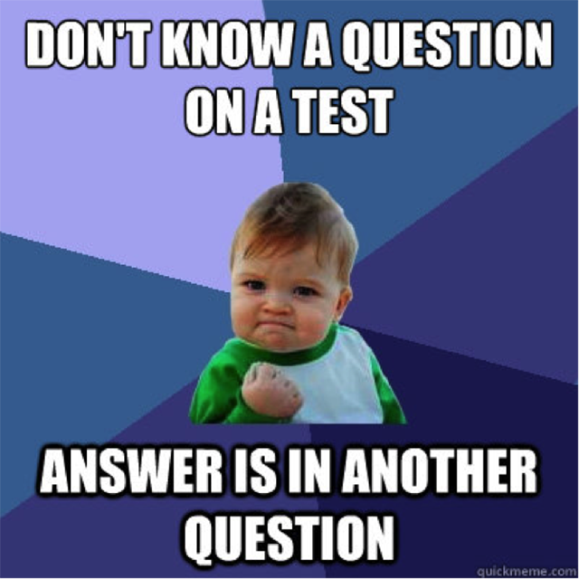

You may be asking yourself what is this internet that all the kids are talking about? well the answer is simple its basically a place where you can meet and interact with people without physcial presence needed.
On here some of the ways you can interact are by posting or interacting with someone elses posts. Its a neat place where people can interact freely express themselves and share ideas with others.
Theres also many other ways to relax since games can also be played online, there are such things as chess, webkinz, club pinguin, and solitare.
How does it work
How does this all work, well you could say its simple but not really. In the easiest way to say this, you can access the internet from a computer which is connected to transmited signals. The computer acts as a
way to interact with this invisible space. when we change something on there theinternet will for the most part save it and store it for when you return to use it again. As stated before people can also publish entries onto it like videos on youtube,
small updates on facebook, or even informational articles and news on their own websites.
What are Some Trends
Some of the trends youll see a lot of on the internet are memes, original art, short-hand for typing to make typing on the keyboards easier. What are memes, they are a way that people express themselves they take a situation that
many people experience and make light of it or make a joke, other times these memes dont have to have any sort of meaning and can be funny for no reason at all. Original art can originate from people who are pasionate about a certain
series or show. They make content about this media and then post them on their platform of choice. And as for shortend words, people tend to make commonly used phrases and longer words into shorter ones in order to make chatting on online forums
easier. Below is an example of a meme.

As seen above many of these memes take a photo, edit them and then add text to it to make it more relatable and funny